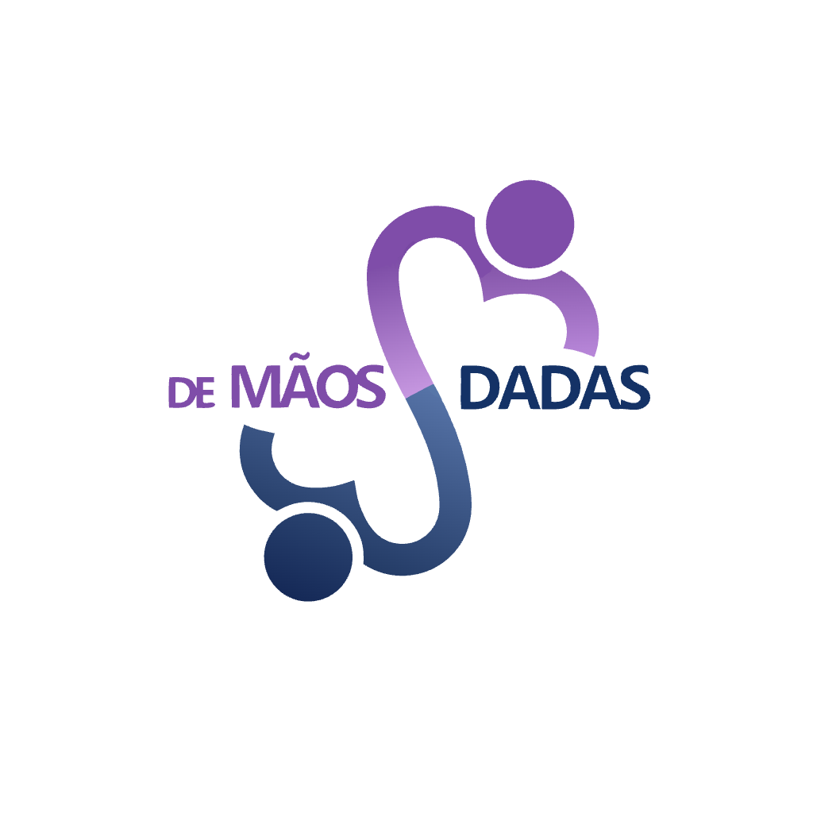

Artes Finais — 3 Variantes

Goiânia · GO
+
Nova variante
Especificações Técnicas
| Item | Especificação |
|---|---|
| Produto | Caneca cerâmica branca 325ml altura 95mm · diâmetro 82mm |
| Técnica | Sublimação total ou área central área impressa: 95mm × 80mm |
| Cores |
Roxo #7F4CA9 · C:40 M:70 Y:0 K:0 Navy #153065 · C:90 M:70 Y:20 K:30 Âmbar #FF9E00 · C:0 M:40 Y:100 K:0 |
| Logo mínima | 35mm de altura na face impressa |
| Tipografia | Anton (headline) · Inter (corpo) · Roboto (labels) |
| Resolução | Mínimo 300 DPI para impressão offset SVG vetorial preferencial para sublimação |
| Regra crítica | Não incluir "De Mãos Dadas" ou "Mãos Dadas" em texto — o nome já está incorporado na logo. Usar apenas site ou tagline como texto de apoio. |
Checklist de Aprovação
✓
Logo na versão correta para o fundo✓
Nome não duplicado na peça✓
Altura mínima da logo: 35mm✓
Site: institutodemaosdadas.com.br Prova física aprovada
Quantidade confirmada com fornecedor
Arte em vetor enviada (.svg / .pdf)
Prazo de entrega confirmado